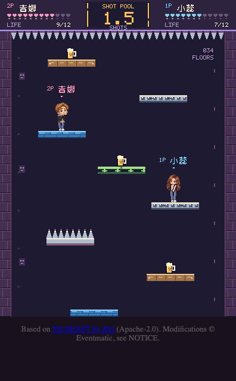
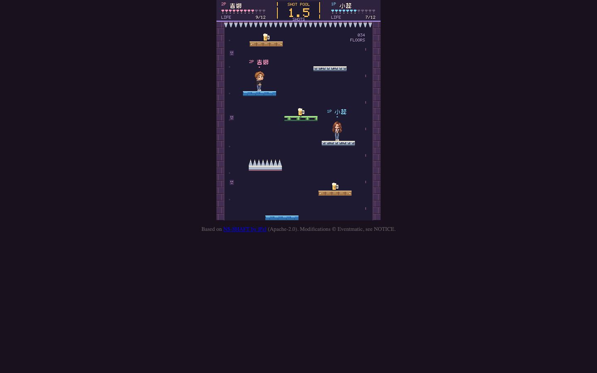
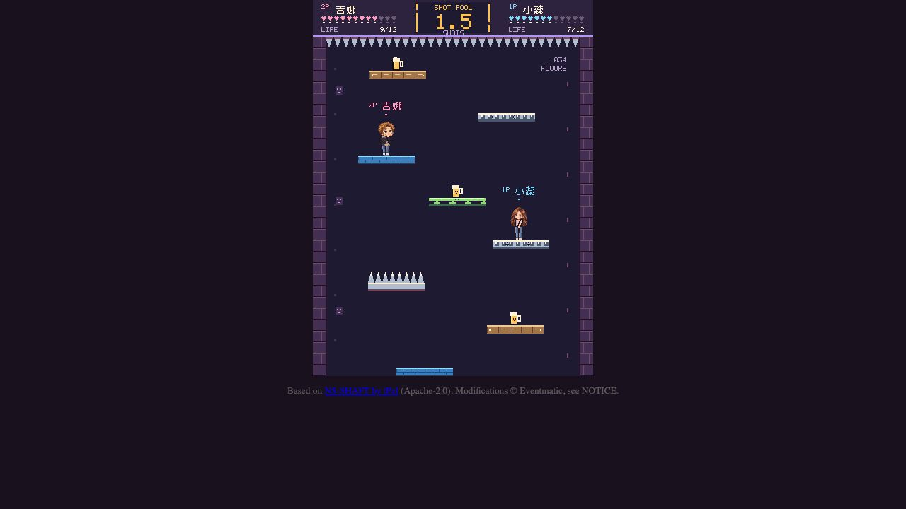
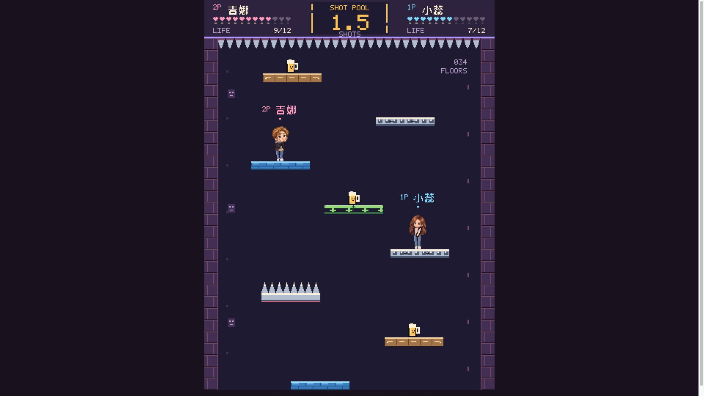
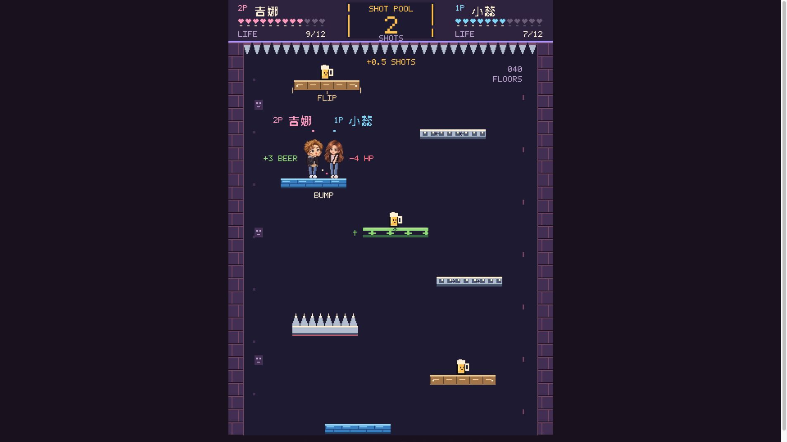

Playful Pixel Arcade — Phase 1
L1 core visuals and L2 cosmetic feedback integrated. Phase 2 screens remain unchanged and await approval.
These are browser captures of the real production renderer. A deterministic staged world makes the platforms, custom portraits and SHOT pool easy to inspect. The six-effect frame deliberately stages post-event HP values and a 34 → 40 floor increase. Functional correctness is established by regression tests and seeded state comparisons, not by this capture fixture.
Canvas aspect stays 396:532. At 1080p the canvas is 792 × 1064. Browser JPEG captures may omit scrollbar gutters/window trim; the native view contains a 396 × 532 canvas within a 396 × 640 browser frame. Full-size images open when selected.
Implementation and verification report · Production game · Phase 0 visual source


Native 1× — 396 × 532 canvas plus footer

Desktop 1440 × 900 — integer 1×

1280 × 720 projector — integer 1×

1920 × 1080 projector — integer 2×

Six integrated cosmetic cues — integer 2×90-check regression results · Deterministic comparison · 1080p stress measurement · 100-cycle cleanup · Scope proof